Optimización Electroquímica de Recubrimientos de Zinc sobre Aluminio 6061 T-6
Diseño de Experimentos Multinivel 2⁵·4, Instrumentación Modular y Supervisión SCADA con Etapa de Potencia Pulsada VCSS y Conmutación ZCS
victor.gutierrez7221@alumnos.udg.mx • 📞 3321905415
salvador.castro7435@alumnos.udg.mx • fernando.samayoa0621@alumnos.udg.mx
Omar.Gonzalez3420@academicos.udg.mx | norberto.casillas@academicos.udg.mx
Sistema CTS-C51: Instrumentación In-Operando y Control Automatizado para Electrodeposición
El Sistema CTS-C51 es una estación de instrumentación, control automático y adquisición de datos en tiempo real desarrollada a la medida para la experimentación de la tesis de licenciatura en electroquímica. Su propósito central es resolver las limitaciones de reproducibilidad en bancos de galvanoplastia manuales, proporcionando un entorno rigurosamente controlado para la síntesis de recubrimientos protectores de zinc sobre sustratos de aluminio aeronáutico 6061 T-6.
🎯 Objetivo 1: Control de Parámetros Críticos de Proceso
- Temperatura Multicanal: Regulación en lazo cerrado PI en 4 tinas (Desengrase a 90 °C, Decapado a 90 °C, Niquelado a 30 °C y Celda Hull a 30 °C) mediante conmutación en cruce por cero (ZCS a 60 Hz), garantizando cero sobretiro (0% OS) para evitar degradación de reactivos y cero interferencia electromagnética (EMI).
- Balance Químico de pH: Adquisición continua y estabilizada de pH con acondicionamiento analógico pseudo-diferencial de alta impedancia (>10⁸ Ω) y filtrado digital de mediana móvil a 25 Hz para controlar la acidez del electrolito.
- Densidad de Corriente Catódica: Modulación precisa de corriente (0 a 6.6 A) hacia la probeta de zincado mediante un sumidero VCSS a 2 A/V, permitiendo corriente directa continua o pulsada a 10 Hz para refinar el grano cristalino del depósito.
📈 Objetivo 2: Adquisición de Datos y Trazabilidad Metrológica
- Adquisición Determinística a Alta Velocidad: Telemetría continua a 10 Hz (SCADA) y muestreo de sensores a 25 Hz respaldado por el núcleo dual del ESP32-S3 y bus I²C Fast-Mode a 400 kHz.
- Trazabilidad Experimental de 32 Ensayos DoE: Cada ensayo del diseño factorial multinivel 2⁵·4 cuenta con registro inmutable, identificación única (ID de corrida Taguchi), tiempo de inmersión y cálculo de carga total culombimétrica en Coulombs.
- Exportación y Validación de Datos (CSV): Almacenamiento continuo con buffer protegido en archivos CSV estandarizados y cálculo en tiempo real de índices de desempeño IAE / ISE para validación estadística de la tesis.
Arquitectura modular organizada por bloques de Nombre + Función: Entradas y Sensado (Izq.) → Núcleo de Control Maestro/Esclavo (Centro) → Etapa de Potencia y Planta (Der.) → HMI y Supervisión (Abajo).
Core 1: Lazos PI, VCSS (Gm=2.00 S), pH A1 y Fail-Safe.
• Core 0: Servidor HTTP REST (/data_all @ 10 Hz), SoftAP "Uli" y OTA.
• Core 1: Lazos PI (1 Hz), sumidero VCSS (Gm=2.00 S), pH A1 (860 SPS) y Fail-Safe.
• Memoria: 512 KB SRAM + 8 MB PSRAM octal + 16 MB Flash SPI.
• AC 60Hz: Optoacoplador 4N35 detectando cruces de red eléctrica.
• DC +12V: Sincronización en GPIO 20 para corte sin arco eléctrico.
• Conmutación en V = 0 evitando picos de tensión y ruido EMI.
• I²C Fast-Mode (400 kHz): ADS1115, MCP4725, AHT20, BMP280.
• SPI @ 4 MHz: MAX6675 (termopar K compensado en unión fría).
• UART2 @ 9600 Baud: Enlace Maestro-Esclavo con tramas binarias.
📐 Suite de Diagramas de Arquitectura Ciberfísica & Flujo de Señales (Mermaid Engine) 12 Diagramas Oficiales RTOS 2.0
Modelado formal de la plataforma experimental: topología distribuida con nodo central ESP32-S3, enlace bidireccional Wi-Fi SoftAP hacia Web Móvil y SCADA, bus I²C con ADS1115 diferencial (A0-A1 para pH, A2-A3 para sensado Kelvin de VCSS), buses SPI/UART2 y concurrencia multitarea FreeRTOS SMP. Toca cualquier diagrama para inspeccionarlo en alta resolución.
Arquitectura Distribuida del Sistema CTS-C51 (RTOS 2.0)

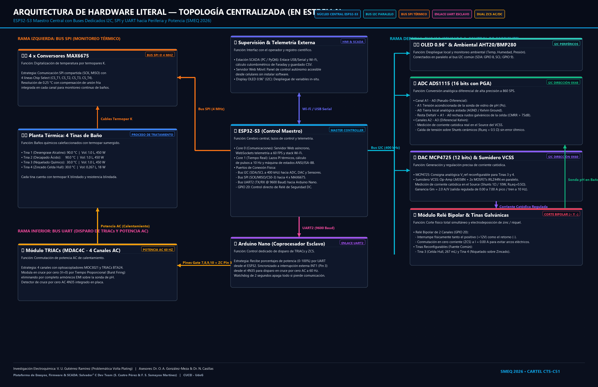
📑 Ver los 7 Diagramas Especializados de Control & Señales ([05] al [11]) Desplegar Suite Completa ▾
Acceso directo a la instrumentación detallada de control térmico, lazo VCSS, corte bipolar ZCS, filtro digital tri-modo de pH, disparo por paquetes 60 Hz, servidor MVC web y supervisión SCADA ISA-88:
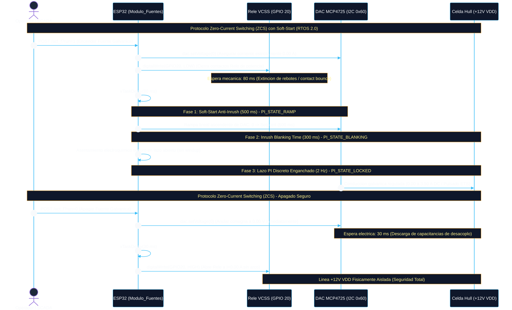
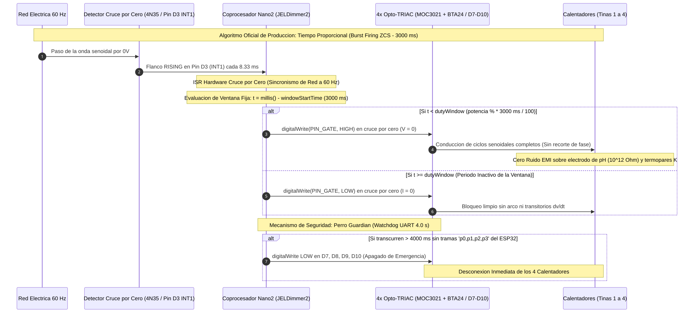
Circuito Físico de Planta — Placa Base Principal, Cableado de Laboratorio y Actuadores Electromecánicos


El control térmico de las 4 tinas de tratamiento opera mediante modulación de tiempo proporcional sincrónica en cruce por cero (Zero-Crossing Switching, 60 Hz). Los fundamentos del acondicionamiento y actuación son:
- Inmunidad contra Ruido Electromagnético (EMI): Al conmutar los TRIACs exclusivamente en V = 0 (di/dt mínimo), se elimina el acoplamiento capacitivo de transitorios de alta frecuencia hacia la sonda de pH (Zin > 108 Ω) y las líneas de termopares.
- Conducción Integral de Ciclos de Red: La entrega de energía se modula conduciendo semiciclos senoidales completos de 60 Hz, asegurando superar la corriente de enganche (Latching Current IL ≈ 50 mA) de los TRIACs BTA24-600B en las resistencias calefactoras de 450 W.
- Modulación Temporal y Supervisión Hardware: La potencia se dosifica en una ventana temporal base ejecutada por el coprocesador Arduino Nano esclavo mediante interrupción externa (INT0/INT1) con watchdog de seguridad de 4 s ante cualquier pérdida de comunicación con el ESP32-S3.
📐 Proceso de Modelado: Desde la Ecuación de Calor hasta el Controlador
Modelado dinámico de las tinas de tratamiento: reducción del transporte térmico bajo agitación forzada a un sistema de capacitancia concentrada de primer orden con retardo de transporte, y cálculo de las ganancias analíticas del lazo PI en hardware/control_matlab/Control_termico.m.
A nivel infinitesimal, la distribución espacial y temporal de temperatura en un fluido viscoso e incompresible se describe mediante la ecuación de la energía de Navier-Stokes (conducción + advección + generación interna):
• ρ · cp (v · ∇T): Transporte convectivo neto debido al campo de velocidad vectorial v del fluido [W/m³].
• q̇vol: Densidad de potencia térmica generada por la resistencia sumergida de 450 W [W/m³].
En la línea de electrodeposición, la agitación mecánica continua y el burbujeo de aire comprimido homogenizan el baño químico, induciendo dos simplificaciones físicas fundamentales:
La agitación turbulenta elimina gradientes térmicos en el seno del líquido en fracciones de segundo: T(r, t) ≡ T(t) ∀ r ∈ V. Por lo tanto, el gradiente espacial es nulo: ∇T ≈ 0, lo que anula el transporte advectivo (v · ∇T = 0) y la conducción interna neta (∇²T = 0).
Bajo convección interna forzada, el coeficiente interno es alto, cumpliendo Bi = (hint · Lc) / k ≪ 0.1. La resistencia térmica interna conductiva es despreciable frente a la disipación convectiva con el exterior, validando matemáticamente el Modelo de Capacitancia Térmica Concentrada (Lumped System).
Integrando la ecuación diferencial continua en todo el volumen de control V de la tina:
Sabiendo que m = ρ · V es la masa total del fluido, la integral de generación volumétrica es la potencia eléctrica neta Q̇(t) = Pin(t), y la integral de flujo superficial por la Ley de Enfriamiento de Newton sobre el área activa As hacia el ambiente T∞ (o Tamb) es h · As · [T(t) − T∞], obtenemos exactamente:
• Q̇(t): Potencia térmica eléctrica entregada por los calentadores de inmersión (450 W) [W].
• m: Masa total de la solución electrolítica en la tina (m = ρ · V) [kg].
• [T(t) − T∞]: Salto térmico respecto a la temperatura ambiente exterior [°C].
• cp: Calor específico del electrolito acuoso (≈ 4184 J/(kg·°C)) [J/(kg·°C)].
*(Para una masa unitaria m = 1.0 kg/L en tinas de 1 Litro, se expresa directamente como cp dT/dt = Q̇ − h As (T(t) − T∞))*
Para pasar al dominio de Laplace, definimos la variable de desviación térmica respecto a la temperatura de equilibrio ambiental: θ(t) = T(t) − T∞, cuya derivada es dθ/dt = dT/dt:
Dividiendo toda la ecuación entre las pérdidas convectivas globales (hefectivo · As), obtenemos la forma canónica de un sistema de primer orden:
Aplicando la Transformada de Laplace con condición inicial nula (θ(0) = 0) e incorporando el retardo puro de transporte térmico (θret) debido a la inercia de la vaina de acero inoxidable y contacto sensor MAX6675:
• Kplanta: Ganancia estática térmica en régimen permanente (1 / (h · As)) [°C/W].
• τplanta: Constante de tiempo térmica dominante del baño (m · cp / (h · As)) [s].
• e−θret·s: Operador trascendente de tiempo muerto expandido mediante Padé.
• s: Variable compleja de frecuencia en el plano de Laplace [rad/s o s⁻¹].
En MATLAB, el término trascendente e−θret·s se expande analíticamente mediante la Aproximación de Padé de Segundo Orden pade(exp(-retardo*s), 2):
• Numerador Padé: Introduce un cero de fase no mínima en el semiplano derecho (RHP).
• Margen de Fase (MF): Sintonizado en MATLAB para garantizar 75° con cero sobretiro (0% OS).
El script hardware/control_matlab/Control_termico.m ejecuta el procesamiento paramétrico exacto para las 4 tinas de la planta física de la Universidad de Guadalajara:
| Canal | Tina de Proceso | Volumen (L) | Área As (m²) | Pmax (W) | Retardo (s) | Tset (°C) | Kplanta (°C/W) | τplanta (s / min) | Control PI (MATLAB) |
|---|---|---|---|---|---|---|---|---|---|
| Canal 0 | Desengrase Alcalino | 1.000 L | 0.0470 m² | 450 W | 6.0 s | 90.0 °C | 0.3273 °C/W | 1369.7 s (22.8 min) | Kp=61.33, Ki=0.206, Kd=0 |
| Canal 1 | Decapado Ácido | 1.000 L | 0.0470 m² | 450 W | 6.0 s | 90.0 °C | 0.3273 °C/W | 1369.7 s (22.8 min) | Kp=61.33, Ki=0.206, Kd=0 |
| Canal 2 | Niquelado | 1.000 L | 0.0470 m² | 450 W | 6.0 s | 30.0 °C | 0.3273 °C/W | 1369.7 s (22.8 min) | Kp=61.33, Ki=0.206, Kd=0 |
| Canal 3 | Celda Hull (Zinc Ácido) | 0.267 L (trapecio) | 0.0210 m² | 18 W | 3.0 s | 30.0 °C | 0.7326 °C/W | 818.5 s (13.6 min) | Kp=16.07, Ki=0.074, Kd=0 |
wc = 0.015 rad/s:Frecuencia de cruce de ganancia calibrada para la inercia térmica de baños de 1 L.PhaseMargin = 75°:Margen de fase restrictivo enfocado en reference-tracking para garantizar respuesta críticamente amortiguada con 0% sobretiro (Zero Overshoot). Evita sobrecalentar y descomponer aditivos electroquímicos costosos.- Kd = 0.0000 (Forzado): La derivada amplifica el ruido eléctrico de la red y el batimiento hidrodinámico en el ADC. Un PI puro proporciona robustez industrial absoluta.
La potencia disipada en una resistencia frente al ángulo de disparo α ∈ [0, π] es altamente no-lineal:
P_norm(α) = 1 − (α/π) + sin(2α)/(2π).
El script genera un arreglo const uint16_t lut_triac[101] mapeando 0% a 100% de potencia en microsegundos (de 8333 µs a 0 µs tras el cruce por cero), linealizando al 100% la respuesta del actuador de potencia.
% 1. Parámetros de Planta Termodinámica por Tina
m = tinas(i).volumen * rho_agua;
K_planta = 1 / (h_efectivo * tinas(i).A_s);
tau_planta = (m * cp_agua) / (h_efectivo * tinas(i).A_s);
% 2. Modelo dinámico en Laplace con Aproximación de Padé Orden 2
s = tf('s');
G_planta = (K_planta / (tau_planta * s + 1)) * pade(exp(-tinas(i).retardo * s), 2);
% 3. Sintonización Analítica PI (Tracking sin Sobretiro)
wc = 0.015;
opciones = pidtuneOptions('DesignFocus', 'reference-tracking', 'PhaseMargin', 75);
C_pi = pidtune(G_planta, 'PI', wc, opciones);
// 4. Parámetros C Generados para el Firmware del ESP32-S3:
double Kp_0 = 61.3300; double Ki_0 = 0.2060; double Kd_0 = 0.0000; // Canal 0: Desengrase (90°C)
double Kp_1 = 61.3300; double Ki_1 = 0.2060; double Kd_1 = 0.0000; // Canal 1: Decapado (90°C)
double Kp_2 = 61.3300; double Ki_2 = 0.2060; double Kd_2 = 0.0000; // Canal 2: Niquelado (30°C)
double Kp_3 = 16.0700; double Ki_3 = 0.0740; double Kd_3 = 0.0000; // Canal 3: Celda Hull (30°C)Acoplamiento analítico entre la señal de control continua $u(t)$ calculada por el algoritmo PI y la conmutación discreta por paquetes de ciclos senoidales en cruce por cero ($V=0$):
El lazo PI en el ESP32-S3 calcula en cada instante la potencia de demanda analógica u(t) ∈ [0, P_max]. El modulador ZCS discretiza esta potencia dentro de una ventana periódica base T_base = 1.0 s (60 ciclos a 60 Hz):
La constante de tiempo de la tina es enorme frente a la ventana base:
τ_planta ≈ 1369.7 s ≫ T_base = 1.0 s (relación > 1300 a 1).
El polo térmico ω_p = 1/τ_p = 0.00073 rad/s atenúa los armónicos de modulación (ω_base = 6.28 rad/s) en:
Debido a esta atenuación masiva, el rizado térmico instantáneo en el baño es microscópico: ΔT_ripple < (P_max · T_base)/(2 · m · c_p) ≈ 0.05 °C. Por el Teorema del Valor Medio de Fourier, la planta térmica responde exclusivamente al armónico cero (DC) de la potencia inyectada:
La retención del ciclo de trabajo durante cada ventana base Tbase introduce un desfase en lazo cerrado equivalente a un Retenedor de Orden Cero (ZOH): G_ZOH(s) = (1 − e^(−s·T_base))/s ≈ e^(−s·T_base/2), añadiendo exactamente media ventana de retardo (Tbase / 2 = 0.5 s).
Por lo tanto, la Función de Transferencia Integral que acopla el modulador temporal, el actuador TRIAC y la planta térmica es:
🎛️ Simulador Interactivo: Modulación ZCS a 60 Hz en Tiempo Real

Figura científica: Macro-conmutación en cruce por cero en banco de ensayo de 3 tinas + celda Hull (2026).
Cruce por cero en Pin D3 (INT1), conmutación de ciclos completos de 60 Hz en ventana de 3000 ms y watchdog UART de 4.0 s.
Supresión de sobretiro (T >= SP+2°C), integración Anti-Windup (0-100%) y rampa asíncrona de arranque suave.
Circuitos Físicos de Planta — Módulo de Potencia TRIACs, Cableado AC, Sensores Térmicos y Dinámica Experimental


El sumidero VCSS (Voltage-Controlled Current Sink) controla con precisión sub-milisegundo la corriente catódica hacia la Celda Hull. Utiliza un amplificador operacional en lazo cerrado (LM358N) como amplificador de error pilotando transistores MOSFET (IRLZ44Z) en modo lineal activo, con sensado Kelvin sobre un banco de 2 resistencias de shunt cerámicas de 1.0 Ω (10W) en paralelo, logrando una ganancia de transconductancia global calibrada de 2.0 A/V.
Este diseño sigue fielmente las especificaciones del Application Report SLAA868A: "Programmable Low-Side Current Sink Circuit" de Texas Instruments (Satterfield, 2024). Dicho reporte valida formalmente la topología de lazo cerrado DAC + Op-Amp + MOSFET, la compensación de estabilidad mediante resistencia de aislamiento de compuerta RISO = 100 Ω (frente a la capacitancia parásita Ciss), y la relación directa de transconductancia gobernada por el resistor de sensado RSET en el sumidero bajo (low-side).

Lazo cerrado DAC + Op-Amp + MOSFET con compensación R_ISO = 100 Ω y sensado low-side Kelvin.
🧮 Modelado Físico-Matemático del Sumidero VCSS (Ecuaciones Gobernadoras & Dinámica)
2 Bloques Complementarios en ParaleloEn estado estacionario con realimentación negativa activa, el amplificador operacional actúa como servo de error forzando igualdad de potencial entre sus terminales de entrada:
• Vref: Tensión de consigna analógica comandada (0.00 – 3.00 V) [V].
• Id · Rs: Caída Kelvin debida a la corriente de drenador sobre el shunt (1.0 Ω) [V].
• Vg: Tensión analógica de compuerta aplicada por el Op-Amp al MOSFET [V].
• V+ = V−: Cortocircuito virtual garantizado por realimentación negativa [V].
• Vref: Tensión de referencia analógica del DAC MCP4725 a 12 bits [V].
• 1 / Rs: Transconductancia individual de la rama activa (1.0 A/V) [S = A/V].
Para modelar la respuesta transitoria frente a escalones de modulación pulsada (10 Hz), se formula el circuito en el dominio complejo de Laplace s incorporando la dinámica finita del Op-Amp y la transconductancia del MOSFET:
• AOL(s): Ganancia en lazo abierto del Op-Amp con polo dominante interno [V/V].
• Id(s) · Rs: Tensión de realimentación negativa muestreada en el shunt [V].
• gm: Transconductancia intrínseca del MOSFET IRLZ44Z (≈ 15 – 25 S) [S = A/V].
• Rs: Resistencia de sensado de corriente en Source (1.0 Ω) [Ω].
• 1 / Rs: Ganancia estática nominal ideal de diseño (1.0 A/V) [A/V].
• AOL(s): Ganancia del operacional que reduce a cero el error frente a la carga [V/V].
Para duplicar la capacidad de corriente máxima hasta 6.0 A pico reduciendo la disipación térmica por elemento activo, la etapa se bifurca en dos ramas idénticas con sus compuertas pilotadas por amplificadores independientes sobre una misma referencia analógica:
• Irama 1, Irama 2: Corrientes individuales equilibradas en cada MOSFET [A].
• Vref: Tensión analógica de referencia única compartida para ambas ramas [V].
• Rs,eq: Resistencia equivalente en Source (Rs / 2 = 0.50 Ω con 20 W combinados) [Ω].
• Sensado Kelvin A2-A3: Caída en Rs,eq digitalizada en modo diferencial por ADS1115 [V].
• Vfuente: Tensión de la fuente DC principal de alimentación (+12.0 V DC) [V].
• 0.5 · Itotal: Caída de tensión sobre la resistencia combinada de sensado en Source [V].
• Itotal / 2: Corriente simétrica distribuida por cada rama del circuito sumidero [A].
• Disipación Total (2 Shunts): 9.0 W + 9.0 W = 18.0 W ≤ 20 W nominal combinados [W].
📈 Simulador de Señal de Salida Cuadrada (Tren de Pulsos de Corriente a 10 Hz)
Durante el tiempo de reposo (toff = 50 ms), los iones Zn²⁺ difunden hacia la capa límite de difusión de Nernst, eliminando la polarización por concentración y suprimiendo el crecimiento dendrítico. Esto genera un recubrimiento compacto, homogéneo y con adherencia superior sobre el sustrato de Al 6061-T6.
🧮 Calculadora de Balance Térmico & Límites SOA del Transistor
El transistor opera holgadamente dentro de su Área de Operación Segura (Tj < 90 °C).
Circuito Físico de Planta — Etapa de Potencia Lineal VCSS, Gabinete y Topología Esquemática


Lazo analógico ultrarrápido con retorno Kelvin en Source hacia ADS1115 Canales A2-A3 diferencial y lazo digital PI discreto con Anti-Inrush.
Corte bipolar simultáneo (+12V ánodo y retorno de cátodo) a corriente nula (I = 0.00 A) con Soft-Start de 500 ms y Blanking de 300 ms.
Durante el proceso electroquímico, corrientes de hasta 7.06 A viajan por el baño electrolítico hacia el cátodo. Estas corrientes inducen caídas óhmicas en las pistas de tierra del chasis. Si el sensor de pH se mide referenciado a masa convencional, el potencial galvánico parásito desplaza la lectura analógica de forma inaceptable. Con la configuración Pseudo-Diferencial, el microcontrolador muestrea ambos terminales de la sonda y calcula ΔV = VA1 − VA0, cancelando el modo común (CMRR > 75 dB) y aislando la medición del ruido galvánico.
En la línea de electrodeposición y galvanoplastia, el espectro de pH abarca desde medios fuertemente ácidos (decapado clorhídrico y celda Hull a pH 4.0 – 5.5) hasta medios alcalinos (desengrase a pH 10 – 12).
- Error Alcalino (Error de Sodio): A pH > 9.0, los iones de sodio (Na+) en soluciones salinas compiten con los iones hidronio (H+) en la matriz vítrea, provocando una caída aparente en la pendiente de Nernst (subestimación de pH si se extrapola la recta ácida).
- Potencial de Asimetría de la Membrana: Las caras interna y externa del bulbo de vidrio presentan potenciales de hidratación disímiles, introduciendo una no-linealidad intrínseca entre los rangos ácido y básico.
- Algoritmo Bilineal en ESP32-S3 (RTOS 2.0): El firmware segmenta la curva en dos pendientes asimétricas independientes (mácida y mbásica) que coinciden continuamente en el punto isopotencial del Buffer Neutro pH 7.00 (V7), eliminando errores sistemáticos de hasta ±0.4 unidades de pH.
• R: Constante universal de los gases ideales (8.31446 J/(mol·K)) [J/(mol·K)].
• 2.3026: Factor de conversión de logaritmo natural (ln) a logaritmo decimal (log₁₀) [Adimensional].
• F: Constante de Faraday (96,485.33 C/mol de electrones) [C/mol].
• 0.1984: Factor electroquímico condensado (2.3026 · R / F) [mV/(pH·K)].
Para compensar el potencial de asimetría y el error de sodio alcalino, la curva de calibración se divide en dos semi-rectas con origen común en el punto isopotencial de Buffer 7.00 (V7):
• Vmed: Potencial eléctrico analógico diferencial muestreado por ADS1115 (A1−A0) [V].
• V7: Tensión analógica calibrada en el punto isopotencial neutro (Buffer pH 7.00) [V].
• Sácida: Sensibilidad experimental en el cuadrante ácido (1/mácida ≈ (V₄ − V₇) / 2.99) [V/pH].
• pH: Valor final de acidez calculado y compensado térmicamente en ESP32 [pH].
• Vmed: Tensión diferencial leída en la sonda (< V₇ en medio básico) [V].
• V7: Tensión de referencia en el punto isopotencial (Buffer pH 7.00) [V].
• Sbásica: Sensibilidad en cuadrante alcalino (compensa el error de sodio Na⁺) [V/pH].
• pH: Nivel de alcalinidad en tinas de desengrase o lavados calculado en RTOS [pH].
🔬 Calculadora Interactiva: Modo Doble Pendiente de 3 Puntos (Buffers 4.01, 7.00 y 10.01)
DOMINIO ÁCIDO (V ≥ V7)Circuitos Físicos de Planta — Sonda de Vidrio de pH, Módulo Transmisor PH-4502C, ADC y Calibración


Adquisición pseudo-diferencial en Canales A0-A1 del ADS1115 a 860 SPS (rechazo de modo común galvánico), acumulador por bloques de 10 muestras, filtro de mediana móvil de 3 puntos, cálculo según modo y filtro pasabajas IIR adaptativo.
El sistema cuenta con doble arquitectura de visualización: una Estación SCADA de escritorio en Python/PyQt6 para telemetría científica a 60 FPS bajo norma ANSI/ISA-88.01, y un Servidor Web Asíncrono Embebido en el ESP32-S3 para control in-situ desde cualquier teléfono móvil o laptop vía Wi-Fi.
1. Estación SCADA Industrial de Escritorio (Python / PyQt6)


Control por lotes de 32 placas experimentales según matriz ISA-88, integración culombimétrica en lazo cerrado Q = ∫ I dt, balanza analítica asistida de 4 decimales y generación de figuras a 300 DPI.
2. Servidor Web Asíncrono Embebido en ESP32-S3 (Acceso Wi-Fi / Móvil)


🌐 Arquitectura del Servidor Web, Mensajería JSON / REST y Trazabilidad en CSV
Desglose de la capa de software y conectividad: cómo el microcontrolador ESP32-S3 sirve la interfaz web en tiempo real sin interferir en los lazos de control de planta, la estructura de los payloads JSON transmitidos por WebSockets / REST, y el flujo determinístico de almacenamiento y lectura de archivos CSV para la trazabilidad de los 32 ensayos Taguchi de la tesis.
Patrón Modelo-Vista-Controlador en Core 0: Vistas en memoria Flash PROGMEM, controladores desacoplados y endpoint unificado /data_all a 10 Hz que reduce el tráfico de red en un 75%.
WebServer & Dual-Core SMP (RTOS 2.0)
Implementado mediante WebServer.h en Task_Web desacoplada bajo FreeRTOS SMP:
- Core 0 (Networking): Maneja la pila TCP/IP, servidor HTTP en puerto 80, SoftAP autónomo y servicio de actualización remota de firmware OTA.
- Core 1 (Control Crítico): Ejecuta determinísticamente los lazos PI térmicos (1 Hz), modulación analógica VCSS ($G_m = 2.00\text{ S}$), adquisición ADC A1 a 860 SPS y Fail-Safe (50 Hz).
- Wi-Fi SoftAP Autónomo: Emite la red local
SSID: Uli(IP:192.168.4.1) o se conecta a la LAN del laboratorio vía mDNS (http://interfaz.local).
REST API & Telemetría Unificada a 10 Hz
La comunicación entre el SCADA Telemetría 2.0 (o navegadores) y el ESP32 utiliza payloads REST estructurados:
- GET /data_all: Snapshot unificado a 10 Hz que consolida 4 tinas, sumidero VCSS, pH A1, meteorología y Fail-Safe reduciendo el tráfico HTTP en un 75%.
- POST /set_t, /set_f, /modo_f: Ajuste directo de setpoints de temperatura, amplitud DAC, frecuencia y ciclo de trabajo de corriente pulsada.
- POST /do_cal_ph, /failsafe_reset: Calibración guiada de pH en Canal A1 persistida en NVS Flash y rearme de seguridad industrial.
Trazabilidad In-Operando (SCADA 2.0)
Registro experimental metrológico para los 32 ensayos Taguchi de la tesis:
- Escritura en Streaming: Hilo en segundo plano (
QThread) en el SCADA PyQt6 que escribe en buffer con volcadoflush()continuo a disco duro. - Estampado Temporal ISO-8601: Cada fila registra fecha, microsegundo, corrida DoE, variables de proceso y métricas de error IAE/ISE.
- Lectura y Post-Proceso: Módulo analítico en Python que lee los CSV, genera reportes gráficos a 300 DPI y exporta matrices a Minitab y OriginLab.
{
"t": [
{"t": 89.85, "sp": 90.0, "p": 28, "run": 1},
{"t": 89.90, "sp": 90.0, "p": 31, "run": 1},
{"t": 25.00, "sp": 25.0, "p": 12, "run": 1},
{"t": 34.10, "sp": 35.0, "p": 18, "run": 1}
],
"f": {
"act": 1, "modo": 1, "amp": 2048, "sp": 2048, "freq": 10, "duty": 20,
"amps": 1.50, "i_real": 1.498, "i1": 0.749, "i2": 0.749,
"vs1": 0.075, "vs2": 0.075, "gm": 2.0000, "comp": 1, "rele": 1
},
"ph": {
"p": "4.52", "v": "1.984", "vs": "2.50", "on": 1, "m": 2,
"sl": "98.5", "c": 1, "il": 0, "v7": "1.765", "v4": "2.050", "v10": "1.320"
},
"env": {"t": "24.5", "h": "48", "p": "1013.2"},
"fs": {"latched": 0, "code": 0, "reason": "OK"}
}# Cabecera estándar de trazabilidad metrológica:
Timestamp_ISO,Ensayo_ID,T_Desengrase,T_Decapado,T_Niquel,T_Hull,pH_Medido,I_VCSS_A,V_Celda_V,Estado_Agit,IAE_Term,ISE_Term
2026-10-08T10:14:00.100Z,DOE_RUN_07,89.82,89.88,29.95,29.98,4.52,2.49,11.84,ON,0.18,0.03
2026-10-08T10:14:00.200Z,DOE_RUN_07,89.83,89.89,29.97,29.99,4.52,2.50,11.85,ON,0.17,0.03
2026-10-08T10:14:00.300Z,DOE_RUN_07,89.85,89.90,30.00,30.00,4.52,2.50,11.85,ON,0.15,0.02
2026-10-08T10:14:00.400Z,DOE_RUN_07,89.87,89.91,30.02,30.01,4.51,2.51,11.86,ON,0.13,0.02
... [Muestreo a 10 Hz continuo durante los 180 s de cada corrida experimental] ...⚖️ Calculadora Culombimétrica: Ley de Faraday de la Electrodeposición
• I: Corriente eléctrica catódica constante regulada por el sumidero VCCS (0.00 – 6.00 A) [A].
• A·s: Amperio-segundo, unidad equivalente fundamental al Culombio en el SI [C].
• Q: Carga eléctrica total transferida calculada en el Paso 1 [C].
• MZn: Masa molar atómica del zinc metálico (65.38 g/mol) [g/mol].
• F: Constante electroquímica de Faraday (96,485.33 C/mol) [C/mol].
• η: Eficiencia faradaica catódica real del baño ácido (80% – 95%) [Adimensional / %].
• mZn: Masa reducida de zinc calculada por las leyes de Faraday en el Paso 2 [g].
• ρZn: Densidad volumétrica del zinc metálico a temperatura ambiente (7.14 g/cm³) [g/cm³].
• 104: Factor de conversión métrico de centímetros a micrómetros (1 cm = 10,000 µm) [µm/cm].
• mZn / (ρZn · A): Altura de capa equivalente en centímetros [cm].
Diseño factorial multinivel implementado en la línea piloto para investigar la adherencia, espesor y morfología cristalina del zincado sobre Aluminio 6061 T-6 con pre-tratamiento de inmersión en zincato ácido (VUGR).
| Ensayo | pH Baño | Densidad Corriente (A/dm²) | Forma de Onda | Tiempo Zincado (s) | Tiempo Matizado (s) | Temp. Tina (°C) |
|---|---|---|---|---|---|---|
| #001 | 3.50 | 1.50 | DC Puro | 60 | 30 | 25.0 |
| #002 | 3.50 | 1.50 | DC Puro | 60 | 60 | 32.0 |
| #003 | 3.50 | 1.50 | Pulsada (10 Hz) | 120 | 30 | 25.0 |
| #004 | 3.50 | 3.00 | Pulsada (10 Hz) | 120 | 60 | 32.0 |
| #016 | 4.20 | 2.00 | Pulsada (10 Hz) | 90 | 45 | 30.0 |
| #032 | 4.80 | 4.00 | Pulsada (10 Hz) | 120 | 60 | 32.0 |
| #064 | 5.20 | 2.50 | DC Puro | 90 | 30 | 28.0 |
| #128 | 5.50 | 5.00 | Pulsada (10 Hz) | 180 | 90 | 35.0 |
Protocolo Experimental y Tesis: Optimización Electroquímica de Recubrimientos de Zinc sobre Aluminio 6061 T-6 mediante Diseño de Experimentos y Control In-Operando (Protocolo VUGR / Reporte Modular 044, UdeG & Volta Plating Solutions, 2026).
Acceso al Repositorio Oficial y Despliegue en Línea
Repositorio Oficial de GitHub
Acceso libre y versionado al repositorio central del proyecto. Contiene el código fuente completo en C++ (firmware ESP32-S3 FreeRTOS y Arduino Nano), software SCADA PyQt6 en Python, modelos de simulación y sintonización analítica en MATLAB (Control_termico.m), esquemáticos electrónicos, diseño de experimentos DoE 2⁵·4 y datos crudos CSV de los 32 ensayos experimentales.
🌐 Despliegue Público (GitHub Pages)
Página web interactiva vinculada al código QR del cartel científico SMEQ 2026. Permite visualizar en cualquier navegador web o smartphone (con soporte táctil y modo offline para Galaxy S26 Ultra) los modelos interactivos, oscilograma de conmutación ZCS, calculadora SOA del MOSFET, balance de pH y matriz factorial DoE.
- (2026). Servicios de preparación, pasivado y recubrimientos electrolíticos industriales de alta especialidad. Guadalajara, Jalisco, México. Industria
- (1963). Manual de recubrimientos electrolíticos industriales (2.ª ed.). Compañía Editorial Continental, S. A., México, D.F. Galvanoplastia
- (1997). Surface pretreatment effects on Zn deposition in zincate process of aluminum alloy. Journal of the Surface Finishing Society of Japan, 48(10), 1019–1024. Zincato
- (1965). An Improvement in the Zincate Method for Plating on Aluminum. Plating, 52(10), 1027–1034. Electroquímica
- (2020). Efecto de la composición química del baño en la microestructura y resistencia a la corrosión de los recubrimientos de zinc por inmersión en caliente: una revisión. Ingenius. Revista de Ciencia y Tecnología, 40–52. Corrosión
- (2019). Zinc morphology change in pulsating current deposition. Journal of Energy Storage, 26, 100966. Corriente Pulsada
- (2017). Electrodeposición de cinc en medio ácido. Deposición de Zinc UPD en la zona de bajos sobrepotenciales. Facultad de Ciencias Exactas y Naturales, Universidad de Buenos Aires. Cinética Electroquímica
- (2015). Electrónica de potencia: Circuitos, dispositivos y aplicaciones (4.ª ed.). Pearson Educación. ISBN: 978-607-32-3532-7. Electrónica de Potencia
- (2020). Application Note AN-3003: Applications of Zero-Crossing Triac Drivers (MOC3041/4N35 Series). ON Semiconductor Technical Publications. ZCS / TRIAC
- (2017). Application Note: Linear Mode Operation and Safe Operating Area (SOA) Considerations for Power MOSFETs. Infineon Automotive & Industrial Power Group. MOSFET Lineal
- (2024). Application Report SLAA868A: Programmable Low-Side Current Sink Circuit. Texas Instruments Analog Engineer's Circuit Design Series. https://www.ti.com/lit/an/slaa868a/slaa868a.pdf Validación VCSS / TI
- (2026). Control_termico.m: Sintonización analítica de coeficientes PI con modelo Padé de 2.º orden y margen de fase 75°. Repositorio Oficial de Desarrollo de Hardware, Universidad de Guadalajara. MATLAB
- (2010). ANSI/ISA-88.01-2010 (IEC 61512-1): Batch Control Part 1: Models and Terminology. International Society of Automation, Research Triangle Park, NC. Norma ISA-88
- (2024). ESP32-S3 Technical Reference Manual (v1.6): Dual-Core Xtensa LX7, MCPWM and Interruption Architecture. Espressif Systems Inc. Sistemas Embebidos
Directorio Técnico de Contacto y Responsabilidades del Proyecto
Víctor Ulises Gutiérrez Ramírez
Tesista de Grado / Autor de la Investigación- Investigación electroquímica y planteamiento experimental
- Formulaciones de baños químicos y aditivos
- Diseño de Experimentos (DoE 2⁵·4 / Taguchi)
- Ensayos gravimétricos, metalografía y conclusiones
Salvador Castro Pérez
Fernando S. Samayoa Martínez
Salvador² C Dev Team
- Instrumentación y acondicionamiento (pH, temperatura, clima)
- Firmware RTOS 2.0 (ESP32-S3) y modulación ZCS (Nano2)
- Electrónica de potencia (Sumidero VCSS y relé bipolar ZCS)
- Modelado físico-matemático, simulación y control PI
- Software SCADA (PyQt6), plataforma Web y telemetría
Dr. Omar A. González Meza
Dr. Norberto Casillas Santana
Directores de Tesis (Depto. de Química UdeG)
- Dirección académica y metodología científica
- Línea de investigación en Electroquímica y Corrosión
- Supervisión de caracterización y resultados de grado